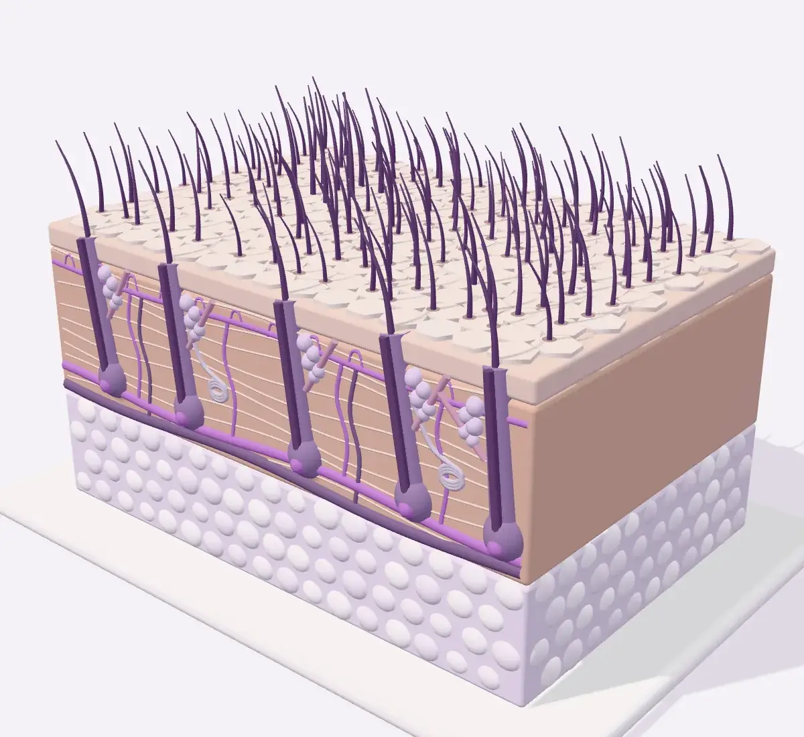

A pele por dentro
Role a página e acompanhe, numa maquete da pele do cão e do gato, o que acontece em cada problema que a Dra. Fernanda investiga na consulta.
A maquete é didática: ácaros, bactérias e fungos aparecem muito maiores do que são, e as cores seguem a identidade do consultório, não as da pele real.
-
Como a pele é feita
A pele tem três camadas. A epiderme, por fora, é a barreira que segura a umidade e barra o que vem do ambiente. A derme, logo abaixo, abriga os folículos de onde nascem os pelos, as glândulas e os vasos sanguíneos. Por baixo fica o tecido subcutâneo, formado principalmente por gordura.
-
Dermatite atópica e alergias
Na dermatite atópica, a barreira da epiderme tem falhas. Alérgenos do ambiente, como ácaros da poeira e pólen, entram com mais facilidade, e o organismo responde com inflamação e coceira. É uma doença crônica: não tem cura, mas pode ser controlada.
A alergia alimentar e a alergia à picada de pulga causam coceira parecida, por isso a investigação separa uma da outra.
Ver alergias e otites -
Sarnas
O Demodex vive em pequeno número nos folículos de todo cão. Quando o organismo deixa de controlar essa população, os ácaros se multiplicam e o pelo cai: é a demodicose.
O Sarcoptes, da sarna sarcóptica, cava túneis na camada mais externa da pele, causa coceira intensa e passa por contato para outros animais e para pessoas. O raspado de pele, feito na consulta, procura esses ácaros ao microscópio.
-
Piodermite
É a infecção da pele por bactérias. Quase sempre é secundária: aparece porque outro problema, como alergia, parasita ou alteração hormonal, abriu caminho. As bactérias se acumulam no folículo e formam pústulas, crostas e falhas no pelo.
A citologia mostra as bactérias durante a consulta, e a cultura com antibiograma, quando indicada, aponta qual antibiótico funciona.
-
Dermatofitose
Fungos que se alimentam da queratina atacam a superfície da pele e os pelos, que ficam frágeis e se partem, abrindo falhas. A doença passa entre animais e para pessoas.
Sob a lâmpada de Wood, os pelos atacados por cerca de metade das cepas de Microsporum canis brilham em verde. Como nem todo fungo brilha, o diagnóstico se completa com tricograma e cultura fúngica.
-
Alopecia X
O pelo vai rareando sem coceira, de forma simétrica no tronco, no pescoço, na cauda e na parte de trás das coxas. Os folículos continuam na pele, mas o ciclo de crescimento do pelo fica parado, e a pele exposta pode escurecer.
É mais comum no spitz alemão e em outras raças de pelagem densa. Hipotireoidismo e síndrome de Cushing causam queda parecida e precisam ser descartados antes.
Ver alopecia X -
Feridas que não cicatrizam
Uma ferida fecha de baixo para cima: o fundo se enche de tecido novo e a pele cresce das bordas para o centro. Infecção, lambedura constante, doenças de base e corpos estranhos podem travar esse processo.
Depois de investigada a causa, a fotobiomodulação, com luz de baixa intensidade, pode entrar como apoio para estimular o reparo e controlar a inflamação.
Ver feridas -
Otites
O canal do ouvido também é pele. No cão, ele tem forma de L: desce na vertical e depois segue na horizontal até o tímpano, o que dificulta a saída de cera e umidade.
Na otite, a pele do canal inflama, incha e produz mais cera, e leveduras como a Malassezia e bactérias se multiplicam. Quase sempre há uma causa por trás, como alergia, ácaros ou corpo estranho. A otoscopia e a citologia de orelha, feitas na consulta, ajudam a encontrá-la.
Ver alergias e otites

Reconheceu algum desses sinais?
Agende uma consulta dermatológica em Jales/SP. A consulta dura cerca de uma hora, com exames feitos durante o atendimento.